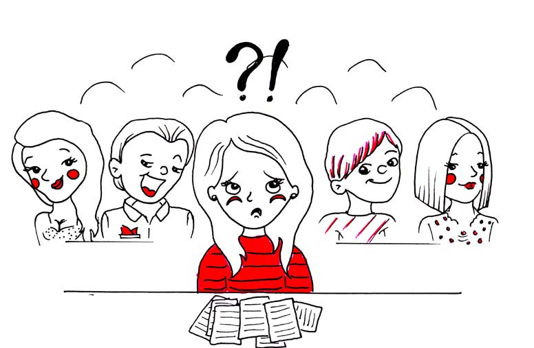

Så er jeg tilbake på universitetet. Det er gått sju år, men det er ikke så mye som har forandret seg. Jeg er litt eldre, jeg vært borte en stund, og jeg har blitt mer moden. Til min store overraskelse står jeg i fare for å bli det som kalles bitter.
Line Mehlum
Student ved NTNU

FRUSTASJON
Det er de samme intellektuelle kidsa som reker rundt på Dragvoll. De står i køer på Akademika og på kiosken, kafeen og kantina. De flørter med hverandre, prater høyt om Nietzche og briefer med kunnskap de ikke har. Eller kunnskap som er tilegnet ved å pugge. Jeg kjenner irritasjonen boble når jeg igjen sitter i forelesningssalen. Jeg greier ikke å rekke handa for å svare på et spørsmål, uansett hvor mye livserfaring og visdom jeg har tilegnet meg i løpet av de siste årene, Jeg greier heller ikke spørre de spørsmålene jeg lurte, og er pissredd for at de jyplingene rundt meg skal synes jeg er teit eller dum. Jeg trodde jeg hadde klart å riste av meg janteloven og turte å være den personen som stiller de dumme spørsmålene. Faktisk trodde jeg på et tidspunkt at det ikke fantes noen dumme spørsmål, bare dumme svar. Jeg var den hellige beskytter av det utsagnet. Jeg er så lei av å være flink og trodde jeg hadde greid å bryte litt ut av imaget. Når jeg ser alle de stolte, flotte, unge kvinner og menn som står og prater med de andre flotte folka; de som står på stand for en eller annen organisasjon som enten skal redde
verden eller skal vise fram hvor flinke
de er. Det er da jeg kjenner et enormt
press. Jeg presses inn i en form som
ikke er laget for mennesker, der man
skal være så sykt oppegående og flink
(og tilfeldigvis digg og fin!). Man skal
aldri si noe feil og aldri gjøre noe
feil. Man skal alltid være opplagt og
perfekt og entusiastisk. Jeg var ikke mer entusiastisk i
2006, men den gangen tok jeg bryet
med å late som. Jeg gidder ikke gå i
fella igjen. Jeg skal gjøre mitt aller
beste å ikke være så flink denne
gangen. Flinkisme er drepen, den
ødelegger gleden over livet! Og bare
fordi jeg vandrer rundt på Dragvoll,
så har jeg et ønske om å være glad.
Jeg går i gang med andre runde på
Dragvoll, men prøver denne gangen
å være minimalt flink. Jeg skal være
flink til å ikke være flink, det er et
paradoks du kan fortelle han der
Nietzche om!